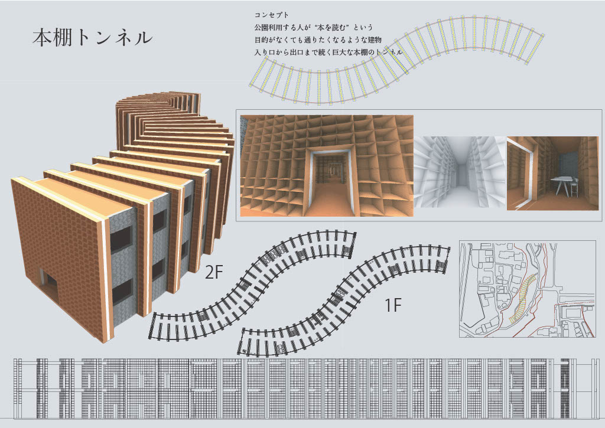
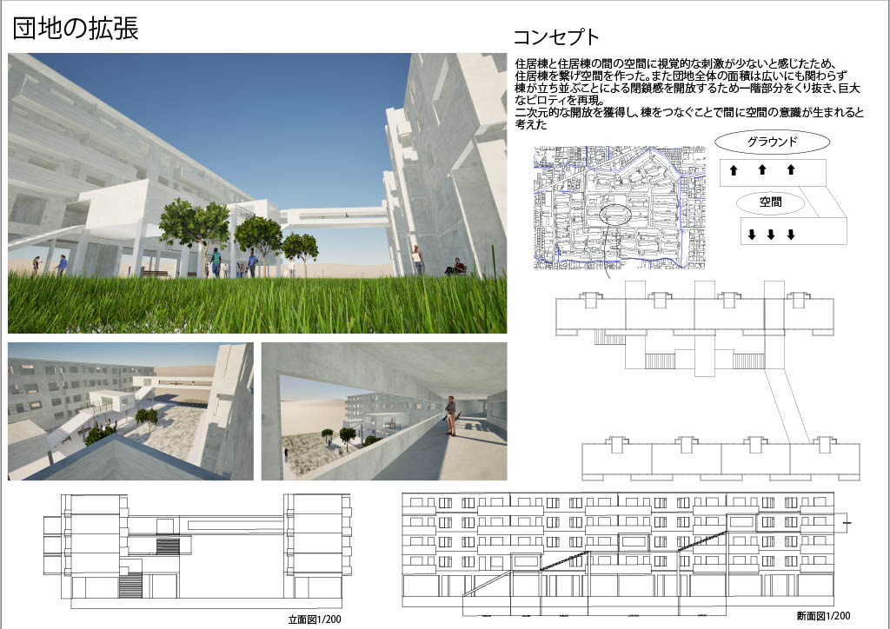
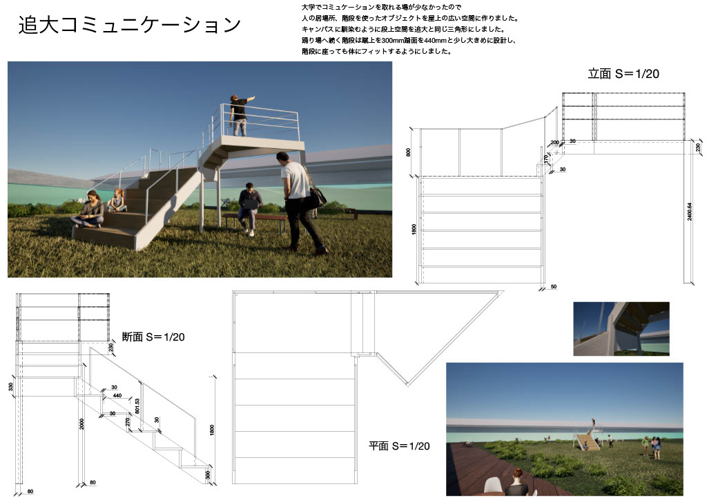
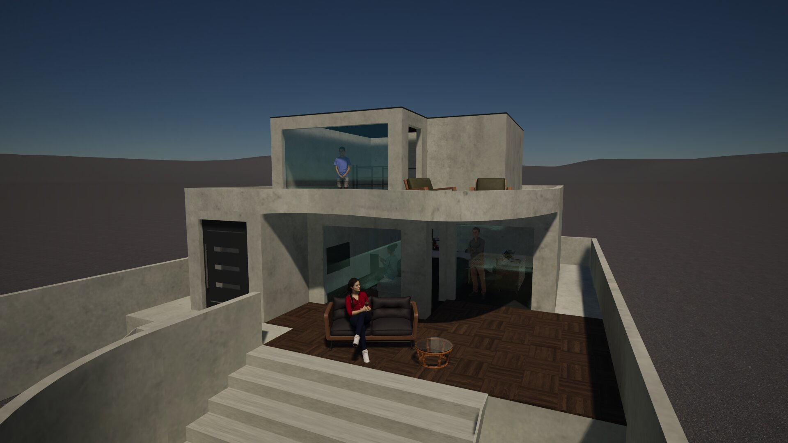
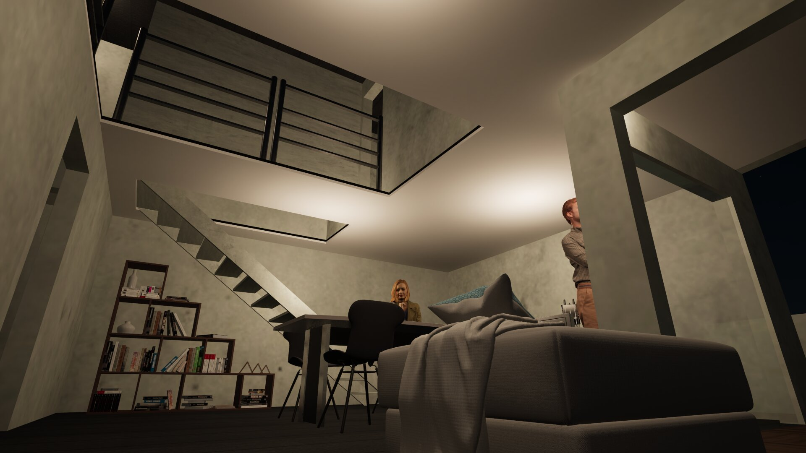

Works
制作作品一覧

本棚トンネル
本のある公園とは
制作年: 2022年
使用技術: Rhinoceros/AutoCad/Illustrator
公共の場に本棚を設置することで、知識の共有と交流の場を生み出す提案。トンネル状の構造により、通路としての機能と閲覧空間を両立させています。

団地の拡張
団地の改修
制作年: 2023年
使用技術: Rhinoceros/AutoCad/Illustrator
既存の団地に新たな機能を付加することで、コミュニティを活性化させる提案。既存の建物を生かしながら、新しい空間を創出します。

追大コミュニケーション
必要な階段
制作年: 2022年
使用技術: Rhinoceros/AutoCad/Illustrator
大学キャンパス内の動線を見直し、学生間のコミュニケーションを促進する階段の提案。従来の移動手段としての役割だけでなく、交流の場としての機能を持たせています。

七里ヶ浜の家
教授のための家
制作年: 2023年
使用技術: Rhinoceros/AutoCad/Illustrator
海が見える立地を活かした住宅設計。プライバシーを確保しながらも、開放的な空間構成を実現しています。教授の研究活動と生活の両立を考慮した間取りです。

七里ヶ浜の家
教授のための家
制作年: 2023年
使用技術: Rhinoceros/AutoCad/Illustrator
海が見える立地を活かした住宅設計の別視点です。内部空間とテラスの繋がりを重視し、自然と一体になるような空間構成を目指しました。
LPcats
saasのキャラクターデザイン
制作年: 2023年
使用技術: Illustrator
SaaS製品のブランディングのためのキャラクターデザイン。親しみやすさと機能性を表現するシンプルでありながら特徴的なデザインに仕上げました。